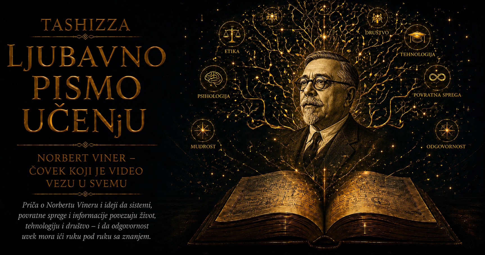

Ljubavno pismo učenju

Norbert Viner je svet posmatrao kao neprekidno kruženje poruka između živih bića, mašina i zajednica. U termostatu, nervnom sistemu, protivavionskom uređaju i ljudskom razgovoru prepoznavao je isti opšti problem: kako rezultat prethodnog delovanja postaje informacija za sledeći postupak. Iz tog pitanja izrasla je kibernetika, jedna od najuticajnijih naučnih zamisli dvadesetog veka. Iza njenog širokog dometa stajao je čovek čiji je sopstveni život bio obeležen neobičnim darom, prerano nametnutom odgovornošću, velikom potrebom za pripadanjem i trajnom zebnjom pred načinima na koje se znanje pretvara u moć.
Rođen je 26. novembra 1894. godine u Kolumbiji, u američkoj saveznoj državi Misuri, kao najstarije dete Lea Vinera i Berte Kan Viner. Njegov otac bio je filolog izuzetne jezičke sposobnosti, poznavalac slovenskih jezika, prevodilac Tolstoja i profesor na Harvardu. U sinu je veoma rano prepoznao izvanredan intelektualni dar i odlučio da njegovo obrazovanje preuzme sa snagom čoveka koji veruje da je pred njim životni poduhvat. Porodična biblioteka postala je učionica, razgovori su se pretvarali u ispitivanje, a gotovo svaki deo svakodnevice pružao je priliku za novu lekciju.
Norbert je sa tri godine učio da čita, a ubrzo zatim proučavao jezike, prirodne nauke i matematiku tempom koji je daleko prevazilazio uobičajeno detinjstvo. Leo Viner bio je nadahnut i široko obrazovan učitelj kada bi sin uspešno pratio objašnjenje, ali se njegov pedagoški zanos pri grešci mogao pretvoriti u gnev i razočaranje. Dečak je tako rano povezao zadovoljstvo otkrića sa strahom da neće ispuniti očekivanje. Njegov dar donosio mu je divljenje javnosti, dok mu je u najprisnijem prostoru nametao osećanje da ljubav, vrednost i sigurnost zavise od intelektualnog uspeha.
U autobiografiji Ex-Prodigy: My Childhood and Youth, poznatoj kao Nekadašnje čudo od deteta, Viner je o ocu pisao sa složenom mešavinom ljubavi, zahvalnosti, divljenja i povređenosti. Bio je svestan da bez očevog znanja i posvećenosti njegov talenat verovatno ne bi dobio isti zamah, ali je jednako jasno nosio posledice obrazovanja u kojem je greška doživljavana kao lični poraz. Ta rana ostala je prisutna u odraslom čoveku koji je mogao hrabro da ulazi u najteže matematičke probleme, a potom duboko pati zbog kritike, nesporazuma ili slutnje da ga je neko odbacio.
Slab vid i telesna nespretnost dodatno su ga izdvajali od druge dece. Kada mu je lekar jedno vreme zabranio intenzivno čitanje, njegov otac je nastavio da ga podučava usmeno, oslanjajući se na razgovor, slušanje i pamćenje. Norbert je tako razvio sposobnost da složene misaone strukture gradi bez stalnog oslonca na napisanu stranicu. Istovremeno je iskusio koliko je krhak identitet deteta čija je celokupna vrednost vezana za učenje, jer mu je privremeni gubitak pristupa knjigama oduzimao glavni prostor u kojem se osećao sigurnim.
Sa jedanaest godina upisao je Tufts koledž, okružen studentima koji su bili znatno stariji i društveno zreliji. Diplomirao je matematiku sa četrnaest godina, dok su novine u njemu slavile čudesni dokaz moći inteligencije i ubrzanog obrazovanja. Javna priča o geniju prikrivala je usamljenost dečaka koji je životne pragove prelazio prerano. Akademski je bio daleko ispred svojih vršnjaka, ali je u prijateljstvu, pripadanju i razumevanju sopstvenih osećanja često pokušavao da sustigne svet odraslih u koji je uveden pre vremena.
Posle Tuftsa kratko je studirao zoologiju na Harvardu, zatim filozofiju na Kornelu, da bi se ponovo vratio na Harvard i 1913. godine, sa osamnaest godina, doktorirao filozofiju radom iz matematičke logike. Njegova promena oblasti otkrivala je radoznalost koja nije priznavala čvrste akademske granice. Privlačili su ga živi organizmi, simbolička logika, matematika i pitanje kako čovek stiče pouzdano znanje. Već u mladosti kretao se prostorom u kojem će kasnije nastati kibernetika: između apstraktnih obrazaca, fizičkog sveta i problema ljudskog saznanja.
Zahvaljujući stipendiji nastavio je usavršavanje u Kembridžu, gde je slušao Bertranda Rasela i Godfrija Harolda Hardija, a zatim u Getingenu radio u intelektualnom okruženju Davida Hilberta. Susret sa vodećim evropskim matematičarima pokazao mu je domet formalne preciznosti, ali i širinu pitanja koja matematika može otvoriti. Posebno ga je privlačila mogućnost da se iza veoma različitih pojava pronađe zajednička struktura. Ta sposobnost kasnije će mu omogućiti da poveže rad regulatora, nervnog sistema, električnog kola i ljudskog pokreta bez brisanja razlika između njih.
Po povratku u Sjedinjene Države dugo nije uspevao da pronađe akademsko mesto koje bi odgovaralo njegovom daru. Predavao je filozofiju, radio za enciklopediju, pisao novinske tekstove i pokušavao da se uključi u ratne poslove tokom Prvog svetskog rata. Želeo je da doprinese zemlji u kojoj je rođen, ali su ga slab vid, nespretnost i neobičan profesionalni put često ostavljali na margini. Tek 1919. godine dobio je mesto na Masačusetskom institutu za tehnologiju, gde će provesti najveći deo karijere i postati jedan od najprepoznatljivijih profesora u istoriji te ustanove.
MIT mu je pružio okruženje u kojem su se čista matematika, elektrotehnika i praktični problemi neprekidno dodirivali. Viner je razvijao važne radove iz harmonijske analize, teorije potencijala, verovatnoće i stohastičkih procesa. Njegovo matematičko opisivanje Braunovog kretanja, kasnije poznato kao Vinerov proces, postalo je temelj moderne teorije slučajnih procesa i našlo primenu u fizici, biologiji, inženjerstvu, ekonomiji i finansijskoj matematici. Slučajnost je za njega predstavljala pojavu čija se unutrašnja pravilnost može istraživati, pa je učio da u prividnom haosu traži strukturu, razlikuje signal od šuma i procenjuje buduće stanje na osnovu nepotpunih podataka.
Godine 1926. oženio se Margaret Engeman, profesorkom modernih jezika, sa kojom je dobio dve ćerke. Porodični život pružao mu je praktičan i emocionalni oslonac, pošto je njegova pažnja često potpuno napuštala neposrednu okolinu i povlačila se u svet matematičkih problema. O njegovoj rasejanosti nastale su brojne anegdote, među kojima je najpoznatija priča da je posle preseljenja zaboravio novu adresu i zatražio pomoć od devojčice koja se ispostavila kao njegova ćerka. Pojedinosti te priče verovatno su ulepšavane, ali su njegove kolege i porodica potvrđivale da je umeo da se toliko udubi u misao da svakodnevni orijentiri privremeno izgube svaku važnost.
Studenti su ga viđali kako prolazi hodnicima MIT-a zadubljen u razgovor sa samim sobom ili zastaje pred tablom da zapiše ideju koja ga je iznenada sustigla. Njegova predavanja mogla su da se razvijaju kroz neočekivane veze između matematike, biologije, filozofije, književnosti i društva. Govorio je brzo, preskakao korake koji su njemu delovali očigledno i ponekad ostavljao slušaoce da tek naknadno pronađu put kroz izloženu misao. Kada bi uspeli da ga prate, dobijali su pogled koji je prevazilazio granice predmeta. Među studentima na koje je snažno uticao nalazio se i Amar Bouz, kasniji osnivač kompanije poznate po audio-tehnici.
Iza rasejanog držanja nalazila se velika emotivna osetljivost. Viner je žudeo za prijateljstvom i pripadanjem naučnoj zajednici, ali je znakove neslaganja ponekad doživljavao kao izdaju. Mogao je biti topao, duhovit, velikodušan i izuzetno podsticajan prema mladim istraživačima čiju bi originalnost prepoznao, a zatim naglo prekinuti odnos kada bi izgubio poverenje. Njegov intelekt sa lakoćom je prihvatao složenost sistema, dok je njegova ranjivost teže podnosila neizvesnost ljudskih odnosa.
Tokom tridesetih godina putovao je po Evropi, Meksiku i Aziji, a posebno važan bio je njegov boravak na Univerzitetu Cinghua u Kini 1935. i 1936. godine. Tamo je sarađivao sa kineskim matematičarem i inženjerom Juk-Ving Lijem na problemima harmonijske analize, električnih mreža i komunikacije. Viner je u takvim susretima nalazio ono što je najviše cenio: sposobnost da apstraktna matematika pređe u inženjersko rešenje, a zatim da praktični problem otvori novo matematičko pitanje. U godinama rastućih političkih napetosti pružao je podršku i naučnicima progonjenim ratom i diktaturama.
Drugi svetski rat usmerio je njegov rad prema problemu automatskog navođenja protivavionske artiljerije. Avion se brzo kretao, pilot je menjao pravac prema opasnosti, a sistem je morao da predvidi budući položaj mete na osnovu nepotpunih i zakašnjelih podataka. Viner je uvideo da se u tom problemu susreću dve strane koje menjaju ponašanje prema postupcima protivnika. Pilot reaguje na vatru, nišanski uređaj prikuplja podatke o njegovoj reakciji i menja procenu, a pilot zatim odgovara na novu pretnju. Ratni zadatak otvorio je opštije pitanje o predviđanju, ciljno usmerenom ponašanju i povratnoj informaciji.
U tom radu naročito su bili važni inženjer Džulijan Bigelou i meksički fiziolog Arturo Rozenblut. Njih trojica su 1943. godine objavili rad Behavior, Purpose and Teleology, u kojem su ponašanje razmatrali prema usmerenosti ka cilju i korišćenju povratne informacije. Rozenblut je Vineru približio način na koji nervni sistem i organizam održavaju ravnotežu, dok je Viner u fiziološkim procesima prepoznavao matematičke obrasce srodne regulatorima i komunikacionim sistemima. Saradnja je pokazala koliko plodan može postati razgovor disciplina koje govore različitim stručnim jezicima, a ipak istražuju srodnu strukturu.
Posleratni susreti iz kojih su nastale Mejsijeve konferencije o kibernetici okupili su matematičare, inženjere, neurofiziologe, psihijatre i antropologe. Među učesnicima i bliskim sagovornicima nalazili su se Džon fon Nojman, Voren Makalok, Volter Pits, Klod Šenon, Margaret Mid i Gregori Bejtson. Razgovarali su o digitalnim računarima, logici neurona, učenju, komunikaciji, porodičnim odnosima i društvenoj organizaciji. Vinerova vizija nudila je prostor u kojem se svaka od tih tema mogla posmatrati kroz protok informacija, delovanje, odgovor i korekciju.
Posebno je složen bio njegov odnos sa Vorenom Makalokom i mladim logičarem Volterom Pitsom. Makalok i Pits su 1943. godine objavili matematički model neurona koji je pokazao kako mreže jednostavnih jedinica mogu izvoditi logičke operacije. Viner je prepoznao izuzetnu važnost njihovog rada, podržao njihov dolazak u okruženje MIT-a i postao Pitsov učitelj i zaštitnik. Saradnja je obećavala razvoj nove nauke o mozgu, učenju i računarima, ali je Viner kasnije naglo prekinuo odnos sa obojicom.
Razlozi tog prekida ostali su predmet različitih svedočenja i biografskih tumačenja. Pominjani su porodično nepoverenje prema Makaloku, stručna neslaganja i Vinerovo osećanje da je iznevereno njegovo poverenje. Dostupna građa ne omogućava jednostavan i potpuno pouzdan zaključak, dok posledice raskida ostaju bolno vidljive, naročito u Pitsovom kasnijem propadanju pod teretom depresije, alkoholizma i bolesti. Ova epizoda otkriva čoveka koji je razumeo da sistemi opstaju zahvaljujući komunikaciji, ali je u sopstvenim odnosima ponekad prekidao komunikacioni kanal čim bi osetio opasnost ili izdaju.
Objavljivanje knjige Cybernetics: or Control and Communication in the Animal and the Machine 1948. godine pretvorilo je rasejanog profesora u međunarodno poznatog mislioca. Knjiga je povezala matematiku, fiziologiju, teoriju komunikacije, upravljanje i filozofiju u trenutku kada su radar, servomehanizmi, elektronski računari i atomsko oružje pokazivali da svet ulazi u novu tehnološku epohu. Viner je ponudio jezik za razumevanje tih promena, ali je istovremeno upozorio da poređenje čoveka i mašine ima granice. Zajednički obrazac organizacije ne daje društvu pravo da ljudsko biće tretira kao zamenljivi deo mehanizma.
Njegov odnos sa Klodom Šenonom pokazivao je dve različite putanje nauke o informacijama. Šenon je u Bellovim laboratorijama razvio strogu matematičku teoriju komunikacije, usmerenu na količinu informacije, prenos signala i prisustvo šuma. Viner je srodne probleme širio prema biologiji, ponašanju i društvu, pitajući šta se događa kada poruka izazove reakciju i kada se posledica te reakcije vrati kao nova poruka. Njihovi radovi postali su dva velika temelja informatičkog doba, jedan usmeren prema matematici prenosa, a drugi prema kruženju poruke kroz sistem koji deluje.
Ratno iskustvo promenilo je Vinerov odnos prema odgovornosti naučnika. Nakon uništenja Hirošime i Nagasakija sve odlučnije je odbijao da tehničko znanje posmatra kao moralno neutralan proizvod čija se dalja upotreba tiče isključivo države, vojske ili naručioca. Kada mu je istraživač iz velike avionske kompanije zatražio rezultate njegovog ratnog rada, Viner je odbio da ih pošalje. Razloge je 1947. godine javno izložio u tekstu poznatom pod naslovom A Scientist Rebels, tvrdeći da naučnik snosi deo odgovornosti za moć koju svojim znanjem predaje drugima.
Taj stav ga je udaljio od bogato finansiranih vojnih projekata u vreme kada je Hladni rat mnogim istraživačima nudio sredstva, prestiž i pristup velikim tehnološkim poduhvatima. Viner nije poricao složenost pitanja odbrane, ali je odbijao ulogu stručnjaka koji izvršava tehnički zadatak i unapred se odriče svakog pitanja o posledicama. Video je kako otkriće nastavlja da deluje u društvu, menja institucije i stvara nove zahteve prema nauci. Odgovornost istraživača za njega je pripadala istom krugu uzroka i posledica koji je opisivala kibernetika.
U knjizi The Human Use of Human Beings, objavljenoj 1950. godine, ovu zabrinutost približio je široj publici. Predviđao je novu industrijsku revoluciju u kojoj će automatizacija menjati administrativni i intelektualni rad kao što su ranije mašine promenile fizički rad. U tehnici je video mogućnost oslobađanja čoveka od iscrpljujućih poslova, povećanja proizvodnje i širenja obrazovanja. Istovremeno je razumeo da ista tehnologija, u društvu usmerenom isključivo prema profitu i kontroli, može odbaciti radnike, koncentrisati moć i pretvoriti ljude u dodatke sistemu.
Vinerovu pažnju posebno je zaokupljala opasnost od mašine koja poslušno i izuzetno efikasno izvršava nepromišljeno zadat cilj. Upozorenje je objašnjavao pričama o čarobnjakovom učeniku i željama koje se ispunjavaju doslovno, jer automatizovani sistem ne poseduje ljudsku mudrost koja bi mu omogućila da samostalno zaštiti pravičnost, zdravlje, dostojanstvo ili smisao. Cilj mora biti pažljivo razmotren pre nego što se pretvori u postupak koji će se neumorno ponavljati. Tehnološka moć tako uvećava posledice ljudske mudrosti, ali jednako snažno uvećava posledice kratkovidosti.
U društvu je prepoznavao potrebu za slobodnim protokom poruka i mogućnošću odgovora. Propaganda, tajnost, medijski monopol i hijerarhija koja kažnjava nepovoljne vesti slabe sposobnost zajednice da ispravi grešku. Vlast koja prima samo izveštaje koje želi da čuje postepeno gubi dodir sa stvarnošću, dok ustanova koja uguši kritiku ostaje bez informacija potrebnih za opstanak. Vinerova tehnička teorija zato je nosila snažnu odbranu otvorene komunikacije, ljudskog učešća i prava da se moći pošalje povratna poruka.
Istovremeno je nastavljao čista matematička istraživanja. Vinerov filter, razvijen iz rada na predviđanju signala u prisustvu šuma, postao je važan metod obrade signala i teorije upravljanja. Njegov matematički opus obuhvatao je harmonijsku analizu, Tauberove teoreme, teoriju potencijala, stohastičke procese i nelinearne sisteme. Za njega je matematika bila jezik obrazaca koji se mogu pojaviti u električnoj mreži, molekularnom kretanju, nervnom sistemu ili društvenoj organizaciji, pri čemu je svaka nova oblast obogaćivala način na koji razume ostale.
Tokom pedesetih godina putovao je po Evropi, Indiji, Meksiku i drugim delovima sveta, držeći predavanja i razgovarajući sa istraživačima o automatizaciji i razvoju. Smatrao je da tehnologija može pomoći siromašnijim zemljama, ali je odbacivao slepo preslikavanje modela velikih industrijskih sila. Tehničko rešenje trebalo je da odgovara ljudima koji će sa njim živeti, njihovim stvarnim potrebama, radu i kulturnom iskustvu. Upravo je povratna sprega zahtevala učenje iz odgovora lokalne zajednice, umesto nametanja gotovog plana koji se proglašava univerzalnim.
Pred kraj života stigla su velika priznanja za njegov naučni rad. Primio je Nacionalnu medalju za nauku Sjedinjenih Država, a njegovo ime već je bilo neraskidivo povezano sa kibernetikom, Vinerovim procesom i teorijom filtriranja signala. Umro je 18. marta 1964. godine u Stokholmu, tokom jednog od mnogobrojnih putovanja. Za sobom je ostavio matematičke rezultate, novu interdisciplinarnu oblast i skup pitanja čija je važnost nastavila da raste kako su računari i automatizovani sistemi sve dublje ulazili u ljudski život.
Viner je kao učitelj umeo da ceni originalnost, intelektualnu neobičnost i samostalnu misao. Studentima u kojima bi prepoznao dar pružao je podršku da pređu granice jedne discipline i slede problem čak i kada ih vodi nepoznatim putem. U tim trenucima davao je ono što je njemu tokom odrastanja često nedostajalo: priznanje da radoznalost ne mora stalno dokazivati svoju vrednost savršenim učinkom. Ipak, sopstvene rane nije uvek uspevao da pretvori u blagost, pa njegov život čuva i tragove odnosa koje su povredili strah, sumnja i potreba za bezuslovnom odanošću.
U njegovoj biografiji pojavljuje se duboka veza između ličnog iskustva i naučne ideje. Dete odgajano pod pritiskom da ne pogreši izgradilo je nauku u kojoj greška postaje neophodna poruka. Matematičar koji je učestvovao u razvoju ratnog sistema postao je zagovornik odgovornosti istraživača za primenu znanja. Rasejani profesor koji se gubio u neposrednom prostoru pokazao je čovečanstvu kako sistemi pronalaze pravac, dok je čovek ranjiv u odnosima otkrio koliko opstanak zavisi od otvorene komunikacije.
Njegovo delo menja i način na koji možemo razumeti učenje. Učenik koji sme da pokuša, pogreši, dobije smislen odgovor i promeni postupak ulazi u živi krug saznanja. Učitelj koji pažljivo prati učenikov odgovor saznaje kako je objašnjenje primljeno i prema tome menja sopstveni pristup. Znanje tada prestaje da putuje samo u jednom smeru, od autoriteta prema onome ko sluša, jer se razvija kroz odnos u kojem oba učesnika opažaju posledice svojih postupaka.
Vinerova trajna veličina nalazi se u njegovom odbijanju da matematičko pitanje odvoji od ljudske posledice. Razumeo je da isti obrazac može pomoći ruci da dohvati čašu, topu da prati avion, mašini da ispravlja rad i digitalnom sistemu da oblikuje ponašanje korisnika. Naučna ideja ne donosi unapred moralni smisao sopstvene primene; taj smisao stvaraju ciljevi, ustanove i odnosi moći u koje je ugrađena. Zbog toga je od naučnika zahtevao savest, od inženjera maštu o posledicama, a od društva sposobnost da odgovori na promene koje je samo pokrenulo.
U vremenu veštačke inteligencije njegova pitanja postaju sve prisnija. Ko određuje cilj mašine, ko dobija podatke o njenim greškama, ko može da ospori automatizovanu odluku i ko snosi posledice kada se povratna petlja zatvori između algoritma i institucije? Da li sistem uči iz ljudskog iskustva ili iz ograničenih podataka koje je neko izabrao? Viner nije mogao da poznaje oblike današnjih tehnologija, ali je razumeo strukturu problema: moćan sistem zahteva jasne ciljeve, pouzdane informacije i čoveka spremnog da sasluša posledice.
Njegov kormilar ostaje snažna slika čitavog života. On ne očekuje savršenu kartu, mirno more ni konačnu kontrolu, jer zna da se pravac čuva pažnjom, poređenjem namere i ishoda i spremnošću da se kormilo pomeri kada stvarnost odgovori drugačije od očekivanog. U toj slici spajaju se naučna metoda, učenje i moralna odgovornost. Norbert Viner nam je ostavio saznanje da budućnost možemo stvarati dostojno jedino ako ostanemo sposobni da čujemo povratni glas sveta koji menjamo.